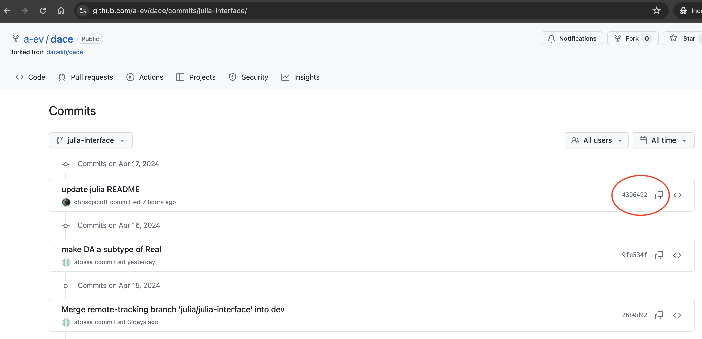

Making a new release of DACE_jll
The DACE_jll Julia package contains the prebuilt DACE library (prebuilt for all combinations of platforms, Julia versions, etc. that Julia is supported on). BinaryBuilder.jl is used to build the libraries and publish them to the Julia registry.
The recipe for building the DACE library can be found on Yggdrasil in the D/DACE directory.
To make a new release of the DACE_jll package you can follow the steps in the following sections.
Make changes to the DACE C++ code
Make your changes and commit them in the dace repo and test them (see setting up your development environment for help getting started with this step).
Make a note of the unique commit hash that identifies the commit that you want the new release of DACE_jll to be built against. This hash can be found using git log or via the commits view in the GitHub interface.

Fork the Yggdrasil repository
On GitHub, make a fork of the Yggdrasil repository, clone that locally and create a branch for your changes
# fork in the github web interface, then...
# clone the repo (replace with the correct URL for your fork)
git clone git@github.com:<namespace>/Yggdrasil.git
# change directory into the repo
cd Yggdrasil
# switch to a new branch
git checkout -b update-dace
# switch to the D/DACE directory
cd D/DACEUpdate the version and commit hash
Edit the build_tarballs.jl file:
bump the version of the release on or around line 11:
version = v"0.1.0"Note It is highly recommended to follow semantic versioning
change the commit hash (on or around line 15) that the new version will be based on to the hash of the commit you identified above
GitSource("https://github.com/a-ev/dace.git", "9fe534f9b27c147a171bce1ad7dc8b4706a9457e"),where 9fe534f9b27c147a171bce1ad7dc8b4706a9457e is the commit hash
Check the version of libcxxwrap_julia_jll
In build_tarballs.jl, check the version of libcxxwrap_julia_jll which is linked to the version of CxxWrap.jl. When bumping the version of the CxxWrap dependency in the DACE.jl package you may also need to bump the version of libcxxwrap_julia_jll on or around line 55:
Dependency("libcxxwrap_julia_jll"; compat = "~0.12.2"),Make sure the version of libcxxwrap_julia_jll is compatible with the version of CxxWrap,jl in your Project.toml for DACE.jl. See also the Using libcxxwrap-julia as a dependency for downstream packages.
Create a pull request
Commit and push your changes into your fork of Yggdrasil:
git add build_tarballs.jl
git commit -m "[DACE] bump version"
git pushYou may need to set the upstream of your repo for git push to work. The above commands are just examples and may need tweaking.
Create a pull request back to the main Yggdrasil repo. The builds will run automatically and you can view their status in the pull request. If they all succeed someone will merge them automatically (you don't need to do anything else). For example, see the Add DACE recipe pull request.
Reference
View complete example of build_tarballs.jl
# Note that this script can accept some limited command-line arguments, run
# `julia build_tarballs.jl --help` to see a usage message.
using BinaryBuilder, Pkg
# See https://github.com/JuliaLang/Pkg.jl/issues/2942
# Once this Pkg issue is resolved, this must be removed
uuid = Base.UUID("a83860b7-747b-57cf-bf1f-3e79990d037f")
delete!(Pkg.Types.get_last_stdlibs(v"1.6.3"), uuid)
name = "DACE"
version = v"0.1.0"
# Collection of sources required to build DACE
sources = [
GitSource("https://github.com/a-ev/dace.git", "9fe534f9b27c147a171bce1ad7dc8b4706a9457e"),
DirectorySource("./bundled"),
]
# Bash recipe for building across all platforms
script = raw"""
cd $WORKSPACE/srcdir/dace
git apply ../patches/no-safe-strings.patch
cmake . -B build \
-DJulia_PREFIX=${prefix} \
-DCMAKE_INSTALL_PREFIX=${prefix} \
-DCMAKE_TOOLCHAIN_FILE=${CMAKE_TARGET_TOOLCHAIN} \
-DCMAKE_FIND_ROOT_PATH=${prefix} \
-DCMAKE_BUILD_TYPE=Release \
-DWITH_PTHREAD=ON \
-DWITH_ALGEBRAICMATRIX=ON \
-DCMAKE_CXX_STANDARD=17 \
-DWITH_JULIA=ON
VERBOSE=ON cmake --build build --config Release --target install -- -j${nproc}
install_license {LICENSE,NOTICE}
"""
# These are the platforms we will build for by default, unless further
# platforms are passed in on the command line
include("../../L/libjulia/common.jl")
platforms = vcat(libjulia_platforms.(julia_versions)...)
platforms = expand_cxxstring_abis(platforms)
# The products that we will ensure are always built
products = [
LibraryProduct("libdace", :libdace),
]
# Dependencies that must be installed before this package can be built
dependencies = [
BuildDependency(PackageSpec(name="libjulia_jll")),
Dependency("libcxxwrap_julia_jll"; compat = "~0.12.2"),
]
# Build the tarballs, and possibly a `build.jl` as well.
build_tarballs(
ARGS,
name,
version,
sources,
script,
platforms,
products,
dependencies;
julia_compat = "1.6",
preferred_gcc_version = v"12",
)
# rebuild trigger: 0